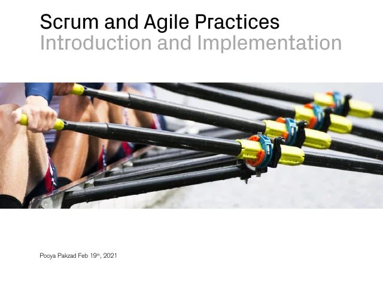

Work samples
Workshops and presentations I have prepared. Each opens as a PDF.
-

Scrum and Agile Practices: Introduction and Implementation
Senior Program ManagerAgile EvangelistSoftware Engineer
Workshops and presentations I have prepared. Each opens as a PDF.

Scrum and Agile Practices: Introduction and Implementation